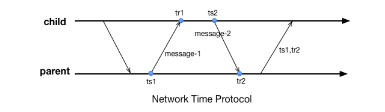
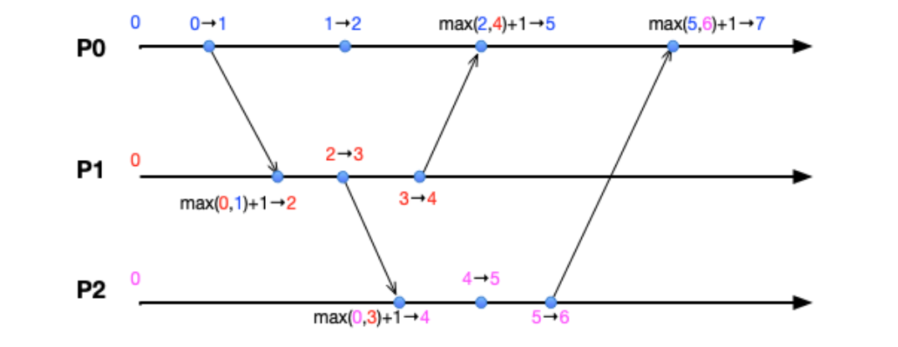
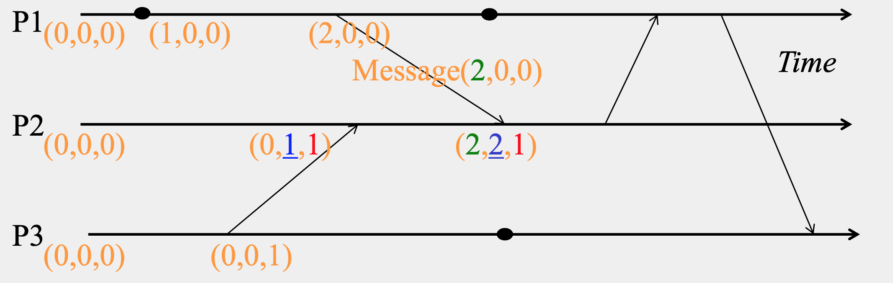
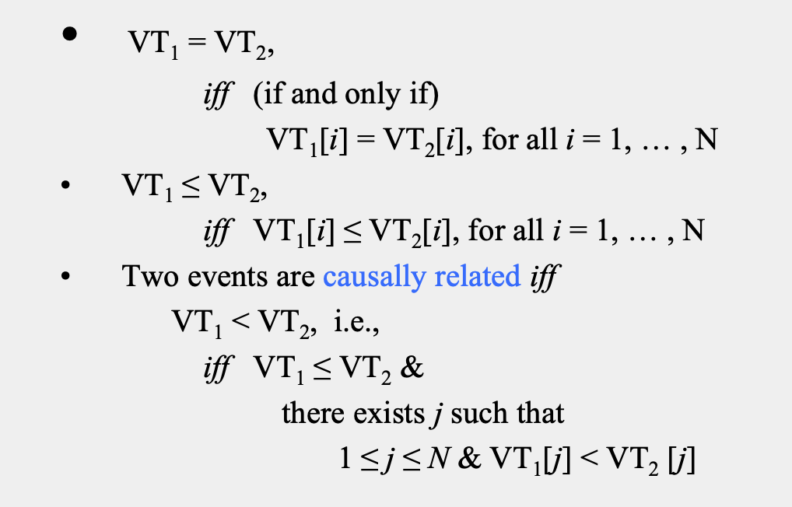
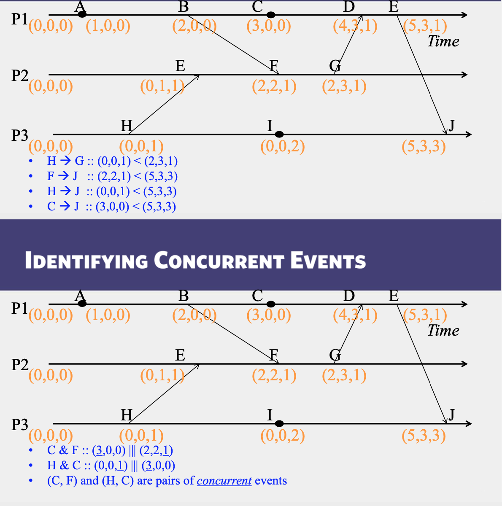

分布式系统和传统的单机系统不同，彼此是通过网络而不是”主板”连接、消息通讯是不可靠的。因此如果没有任何同步机制，同一系统的成员之间无法确保时间戳的误差控制在某个范围内。这个基本条件的缺失，会给上层应用的设计带来很多的麻烦。比如，一个业务流程的两个阶段分别在两台机器上处理，而后在第三台机器上将处理记录join起来，就可能因为时间戳的问题引发混乱。如何做好时间同步的协议，成为了分布式系统中的一个基本的问题。
在系统对时的时候，有两类基本的协议，第一个是外部对时，简单的说，就是整个分布式系统中的所有成员，与外部某个指定的源头进行时间同步，确保与源头的时间的diff在某个误差范围$D$内; 另一种是内部对时，即内部通过广播等各种手段，确保系统内的成员俩俩间的时间误差在一定范围内。从这里可以看出，如果一个集群使用了外部对时，控制误差在$D$以内，那么这个集群内部的时间的误差，也一定能够控制在$2D$的范围内。但反过来不一定，因为有可能整个集群与外部的时间存在很大的整体偏差，尽管在内部彼此的偏差很小。
那么如何进行时间的同步呢？这里介绍两个经典的协议：Cristian和NTP。
Cristian
Cristian的基本过程是这样的，假定现在P进程要从授时服务器S获取时间，那么最朴素的做法就是P向S发送请求，S将自己的时间t返回给P，而后P设置自己的时间为t。这个做法存在一个很关键的问题，就是由于网络的通讯时间是不确定的，P拿到t的时候，已经经过了不确定多久了，无法估计结束后P与S的时间误差范围。因此，我们需要将网络通讯的时间，即RTT(Rount Trip Time)也考虑进来。在这个场景下，RTT指的是P进程发出请求，到得到S的回应消息的时间差，这个时间差是P进程自己可以记录求得的。假定我们知道从 $P \to S$的最小延时是 $min_1$, $S \to P$的最小延时是$min_2$,那么，我们可以推断，真实的时间在$[t+min_2, t+RTT-min_1]$间内，Cristian的做法就将对时结果设置为：$t’=t+\frac{RTT+min_2-min_1}{2}$ 这个中间位置上。那么，其误差就能控制在$\pm \frac{RTT-min_1-min_2}{2}$ 的范围内。

NTP
另外一个知名的时间同步协议是NTP，全称Network Time Protocol。NTP协议一般在某个大的机构内部署，将机构内的设备组织成树形结构，每个节点都从父节点处获取时间。整个同步过程分为两轮，第一轮父节点记录自己发送返回的时间点$ts_1$，子节点记录自己接收到返回消息的时间 $tr_1$；而后第二轮，子节点记录自己的发送时间$ts_2$；；父节点记录收到请求的时间$tr_2$后将$ts_1$ 和 $tr_2$返回。那么子节点可以计算出自己和父节点之间的时间偏差为: $o=\frac{(tr_{1}-tr_{2}+ts_{2}-ts{1})}{2}$，并以此为依据进行修正(一般需要确保时间不能“倒流”)。那么为什么$o$是这么计算呢？假定子节点与父节点的时间偏差(offset)为$o\prime$、父节点往子节点的通讯时延为$L_1$、子节点往父节点的通讯时延为$L_2$，那么:
相减可以得到:
因此:
由此可知o的这个值也在RTT相关的一个误差范围内，是可估计的。
从上面两个协议可以看出，对时的误差是与RTT强相关的。由于消息的传递受制于光速、距离越远时间准确度的保证就越差。对于那些假定了时间误差在某个范围内的分布式协议，在跨越距离很大的时候，我们就必须要将这个误差对系统的影响考虑在内，这将显著增加分布式系统设计的复杂度、或者影响设计出来的系统的吞吐(尤其是有高一致性要求的事务型系统)。
最后，不论是Cristian还是NTP，都只描述了一次对时如何将时间的偏移(clow skew)控制在一定范围内。由于不同机器的时钟的行进速度(clock drift)是不同的，因此我们需要每隔一段时间，进行一次修正，以消除时钟节奏不同的影响。多久需要做一次同步呢? 这个做一个简单的计算就可以得到。假定系统整体时钟的行进速率与标准时钟的速率小于MDR(Max Drift Rate, 一般由时钟的实现方式决定)，那么系统内俩俩时钟的行进速率差小于2MDR。如果我们要求系统内时间差不能超过M，那就必须以不低于$\delta = \frac{M}{2 \times {MDR}}$的间隔进行时间同步。在现实的系统中，我们需要计算合理的M，以避免系统内出现过多的时间同步消息。
在上面部分，我们谈到了分布式系统里进程彼此的物理时间是如何进行同步的，并介绍了一些经典的时间同步算法。但静下心来仔细想想，我们希望进行时间同步，很多时候是希望不同的进程，对系统内事件的顺序达成一致。至于是否是使用真实世界的那个时间来排序，往往并不是那么重要。
那么，如何在一个分布式系统中，对发生在众多节点上的事件进行定序呢？目前已知的做法包括以下几种：
- 使用物理时间同步的方法，确保众多节点的时间偏差在某个范围内。而后记录事件的发生时间及理论误差范围，比如将每个事件的发生时间登记为$(t \pm \Delta)$如果两个事件的时间范围没有overlap，那么就自然的可以排序判断；否则，则需要引入一个新的排序规则(比如以节点id)，对这两个事件约定一个排序。spanner中采用了这种方式。
- 采用Lamport Timestamp及其引申算法进行定序，确保事件满足causality consistency的性质，成为后续更高层次的分布式算法设计的基础。本文后面主要将展开这类算法，并引出分布式系统中一些基础概念。这些基础概念是理解分布式共识问题(consensus problem)的基础。
Lamport
为明确这个问题，我们首先需要先对事件的序(happen-before)做出一个定义。在Lamport的体系中，事件的先后关系是按照如下原则设定的：
- 规则一：如果A、B两个事件都发生在同一个进程内，那么，A、B之间的序自然可以由这个进程给出。假如进程先执行了A后执行了B，那么可以说A在B之前发生，记为$A \prec B$;
- 规则二：如果进程x往进程y发送了一条消息M；设在进程x的消息发送事件为A，进程y收到消息的事件为B，则显然我们应当认为A在B之前发生，同样记为$A \prec B$.
由此引出了Lamport timestamp的算法，这个算法就是一种给事件打上逻辑时间戳、确保其满足causality的基本属性。这个算法的基本过程为：
- 每个进程都记录自己的一个当前时间戳，初始的时候，大家都是0
- 如果进程内部发生了一个新的事件，那么将当前时间戳记为 $t’=t+1$，并认为事件发生于$t’$时刻
- 如果进程A向进程B通讯，则发送消息的时候，进程A的时间戳$t’_A = t_A + 1$并随消息发送到B，B更新自己的时间戳为$t’_B = max(t’_B, t’_A) + 1$.

Concurrent Events
- A pair of concurrent events doesn’t have a causal path from one event to another (either way, in the pair)
- Lamport timestamps not guaranteed to be ordered or unequal for concurrent events
- Ok, since concurrent events are not causality related!
- Remember
1 | E1 -> E2 => timestamp(E1) < timestamp (E2), |
Vector timestamps
- Used in key-value stores like Riak
- Each process uses a vector of integer clocks
- Suppose there are N processes in the group 1…N
- Each vector has N elements
- Process i maintains vector Vi[1…N]
- $j_{th}$ element of vector clock at process $i$, $V_i[j]$, is $i’s$ knowledge of latest events at process $j$
Incrementing vector clocks
- On an instruction or send event at process $i$, it increments only its $i_{th}$ element of its vector clock.
- Each message carries the send-event’s vector timestamp V_{message}[1…N]
- On receiving a message at process $i$:

Causality

